Gökyüzünün kızılötesi filmini izle: hareket edeni ve değişeni yakala.
TAKIM
Kuyruk Team
TAKIM ÜYELERİ
Cuma Doğan
github.com/CumaDogangithub/nasa_space_apps14–15 Kasım 2026
NASA SPACE APPS CHALLENGE 2026PROJE RAPORU · KASIM 2026
SPHEREx Blink Tree
Gökyüzünün kızılötesi filmini izle: hareket edeni ve değişeni yakala.
Bir koordinat ya da cisim adı yaz. Araç, NASA’nın SPHEREx teleskobunun o noktayı gördüğü bütün görüntüleri arşivden canlı okur, hizalar ve kısa bir film gibi oynatır. Bir yıldıza tıkla: 0.75–5 µm spektrumu ve ışık eğrisi anında çizilir.
5 / 5test hedefi araçta çalışıyor
102kızılötesi renk, 0.75–5 µm
< %1her 65 MB’lık dosyadan okunan kısım (3′ alan)
0.4–0.8″Gaia’ya göre ortanca konum farkı
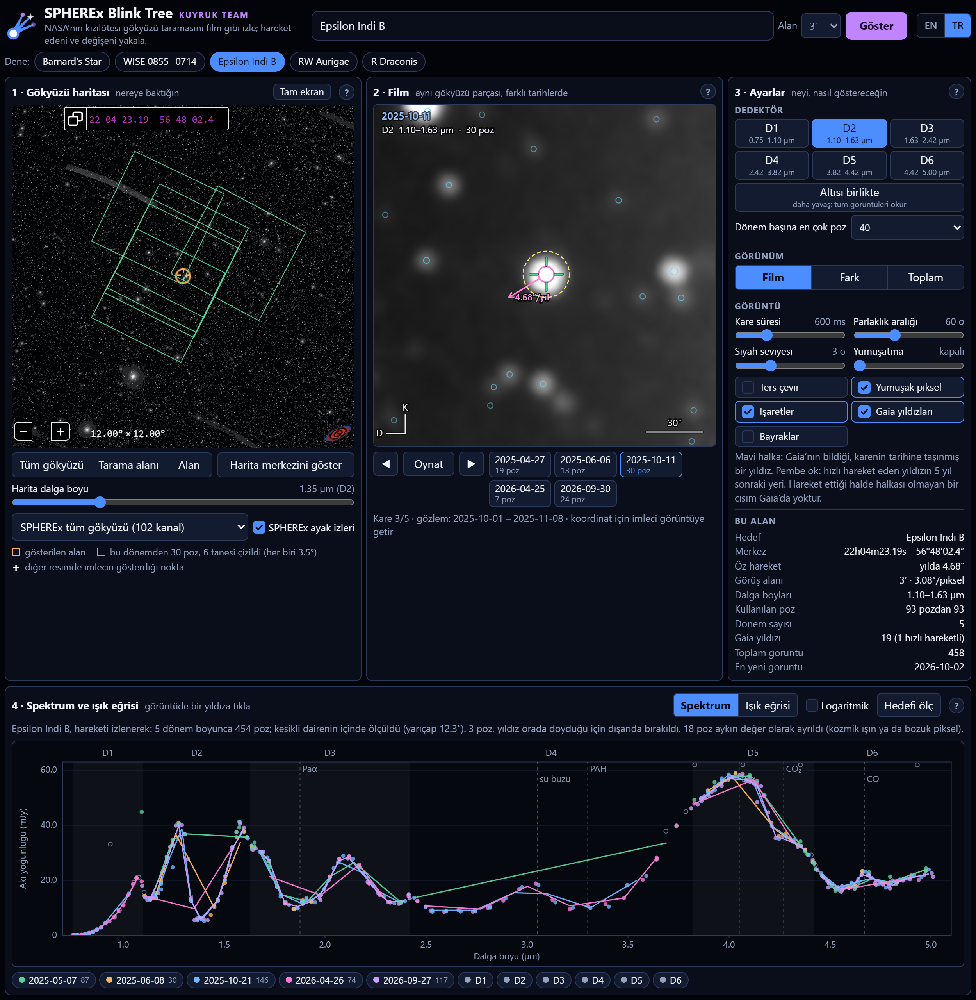
TAKIMKuyruk TeamCuma Doğan
GÖREVPlanet X and SPHERExSPHEREx görüntülerini zaman içinde canlandıran, herkese açık bir web aracı
KAYNAK KODgithub.com/CumaDogangithub/nasa_space_apps
SPHEREx Blink TreeNASA Space Apps Challenge 2026
1Görev ve çözümümüz
Görev, WiseView’in WISE için yaptığını SPHEREx için yapmaktı: aynı gökyüzü parçasını farklı tarihlerde art arda göstermek.
Görev ne istiyordu?
SPHEREx, tüm gökyüzünü 102 kızılötesi renkte (0.75–5 µm) tarayan bir NASA uzay teleskobudur. Aynı noktaya yaklaşık altı ayda bir geri döner; verileri herkese açıktır ve her hafta yenilenir.
İstenen şuydu: kullanıcı bir koordinat girsin, araç o gökyüzü parçasının SPHEREx görüntülerini küçük bir video gibi art arda göstersin. Böylece hareket eden ya da parlaklığı değişen cisimler kolayca fark edilsin.
Beş test hedefi verildi: Barnard Yıldızı, Epsilon Indi B, WISE 0855, RW Aurigae ve R Draconis.
Çözümümüz
SPHEREx Blink Tree bir web sayfasıdır. Koordinat ya da cisim adı yazılır; araç o noktayı içeren bütün SPHEREx görüntülerini arşivde bulur, yalnız gereken pikselleri okur, gökyüzünde hizalar ve ziyaret ziyaret üst üste bindirip film gibi oynatır.
Hiçbir şey önceden hesaplanmaz: araç her alan için arşive sorar. Bu yüzden bütün gökyüzünde çalışır ve yeni veri geldikçe kendiliğinden güncel kalır.
Arayüz Türkçe ve İngilizcedir. Dört numaralı kutu kullanıcıyı haritadan filme, filmden spektruma götürür.
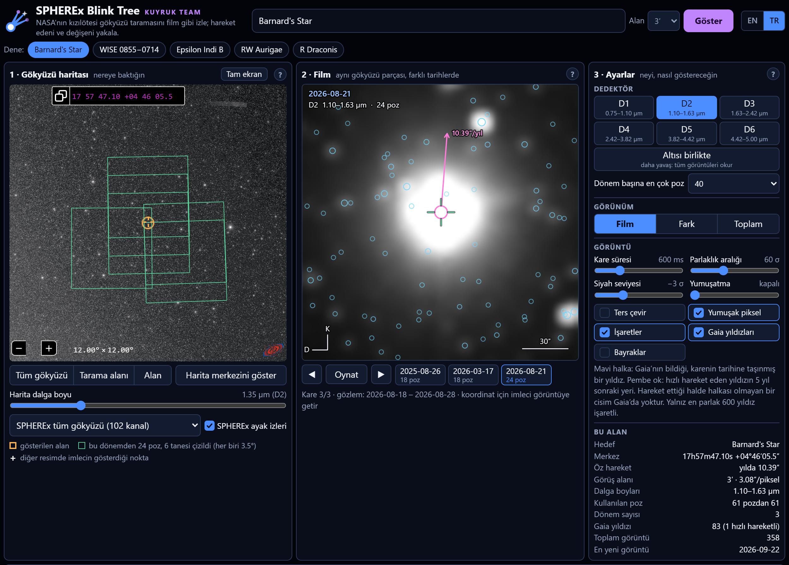
Aracın ana ekranı: Barnard Yıldızı, D2 dedektörü (1.10–1.63 µm). Mavi halkalar Gaia’nın bildiği yıldızlardır; pembe ok, yıldızın beş yıl sonra varacağı yeri gösterir. Soldaki haritada yeşil kareler, o ziyaretteki 24 SPHEREx pozundan altısının gökyüzündeki izleridir.
1Gökyüzü haritasıNereye baktığını ve teleskobun o noktayı nasıl taradığını gösterir; 102 kanal bir kaydırıcıyla gezilir.
2FilmAynı gökyüzü parçası, farklı tarihlerde. Fark görünümü değişmeyeni siler; Toplam daha derin bir görüntü verir.
3AyarlarAltı dedektör, görüş alanı, kontrast, Gaia yıldızları ve SPHEREx’in kalite bayrakları.
4Spektrum ve ışık eğrisiBir yıldıza tıklanınca 0.75–5 µm spektrumu ve parlaklığının zamanla değişimi çizilir.
github.com/CumaDogangithub/nasa_space_apps3 / 8
SPHEREx Blink TreeNASA Space Apps Challenge 2026
2Nasıl çalışır?
Tarayıcıda sade bir sayfa, küçük bir Python sunucusu ve NASA’nın açık arşivleri. Arada hazır bir görüntü deposu yok.
Tarayıcıdüz HTML + JavaScript, kurulum yok
film · fark · toplam
kontrast ve yumuşatma
spektrum ve ışık eğrisi
gökyüzü haritası (Aladin Lite)
konum, alan, dedektör
ham sayısal kareler
SunucuPython · FastAPI + astropy
görüntü arama
hizalama ve yığma
parlaklık ölçümü
disk önbelleği
IRSA görüntü araması (SIA2)“Bu noktayı hangi görüntüler kapsıyor?” · 1–5 sn
AWS S3’teki açık SPHEREx verisiyalnız gereken baytlar · HTTP range istekleri
ESA Gaia DR3 · SIMBADyıldız konumları, öz hareketler, isimler
Görüntüleri bul. IRSA’nın görüntü arama servisi, ayak izi o noktayı içeren bütün SPHEREx görüntülerini 1–5 saniyede listeler.
Yalnız gereken pikselleri oku. Her görüntü 62–66 MB’lık bir dosyadır. Sunucu dosyayı indirmez; başlığı ve hedefin çevresindeki satırları HTTP “range” istekleriyle okur. 3′ lik bir alan için dosya başına yaklaşık 0.4 MB, yani dosyanın %1’inden azı yeter.
Hizala. Her küçük pencere, görüntünün kendi astrometrisiyle, kuzey yukarıda olacak biçimde ortak bir ızgaraya taşınır ve yerel gökyüzü parlaklığı çıkarılır.
Ziyaretlere ayır ve yığ. 15 günden uzun bir boşluk yeni bir ziyaret (dönem) başlatır. Her dönemde bir dedektörün bütün pozları, aykırı değerler atılarak ortalanır; doymuş yıldız çekirdekleri ortalamaya katılmaz, işaretlenir.
Göster. Tarayıcı ham sayısal kareleri alır; kontrast, film, fark ve toplam işlemlerini kendisi yapar. Bu yüzden ayarlar anında tepki verir.
Spektrograf olmadan spektrum
SPHEREx’te prizma yoktur. Her dedektörün önündeki süzgecin geçirdiği renk, dedektör boyunca yavaşça değişir; teleskop pozlar arasında kaydıkça yıldız her seferinde başka bir renge düşer. Araç, tıklanan noktayı altı dedektörün bütün pozlarında 12″ yarıçaplı bir daire içinde ölçer ve her pozun dalga boyunu dedektörün kendi tablosundan bulur. Noktalar birleşince 0.75–5 µm spektrumu ortaya çıkar.
Işık eğrisinde her poz, yıldızın aynı dalga boyundaki kendi ortalamasına bölünür. Böylece kırmızı bir yıldız, ziyaretler farklı dalga boylarını örnekledi diye değişiyormuş gibi görünmez.
Neden hep güncel?
Araç hazır görüntü deposu tutmaz; arşive “şu an ne var?” diye sorar ve yanıtı en çok bir gün kullanır. Her hafta eklenen görüntüler kendiliğinden görünür. Yeni bir veri sürümü için tek satır yeter: releases.json dosyasına koleksiyon adını eklemek.
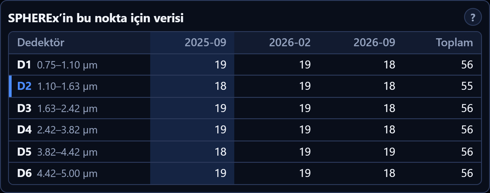
Bir nokta için arşivde ne var: dedektör ve ziyaret başına poz sayısı (RW Aurigae). Satıra tıklamak o dedektörün filmini açar.
1–5 snarşivde görüntü arama
≈ 0.4 MBdosya başına okunan veri (3′ alan)
5–30 snyeni bir alanın ilk görüntüsü; sonrası önbellekten anında
6.15″bir SPHEREx pikselinin gökyüzündeki boyutu
github.com/CumaDogangithub/nasa_space_apps4 / 8
SPHEREx Blink TreeNASA Space Apps Challenge 2026
3Sonuçlar: hareket edenler
Beş test hedefinin beşi de araçta çalışıyor. Bu iki sayfadaki bütün resimler aracın kendi ekran görüntüleridir.
Barnard Yıldızı
gökyüzünün en hızlı yıldızı
SPHEREx bu yıldızı üç kez ziyaret etti: Ağustos 2025, Mart 2026 ve Ağustos 2026. İlk ve son ziyaret arasında yıldız yaklaşık 10″ kuzeye kaydı. Fark görüntüsünde eski yeri koyu, yeni yeri parlak görünür; pembe ok, Gaia’nın ölçtüğü hareketle beş yıl sonra varacağı yeri gösterir.
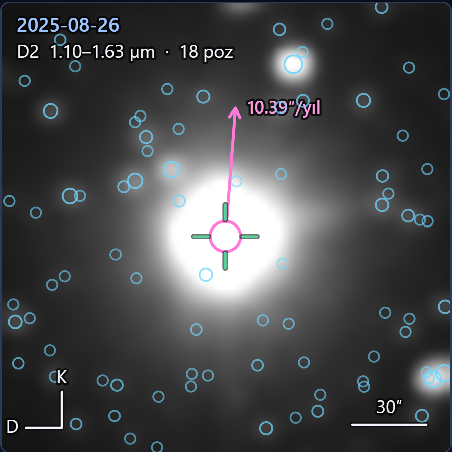
26 Ağustos 2025
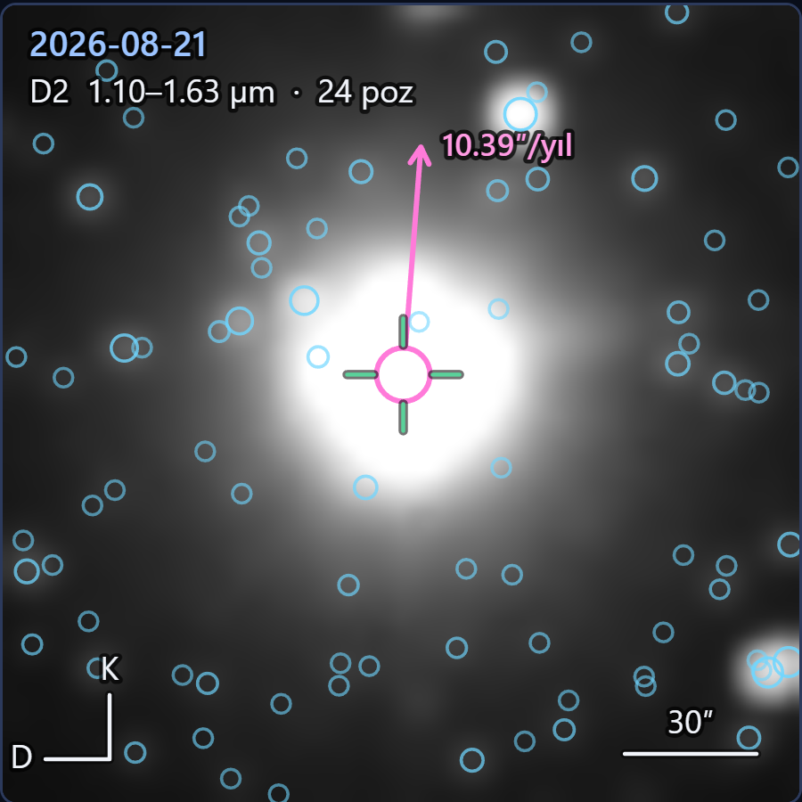
21 Ağustos 2026
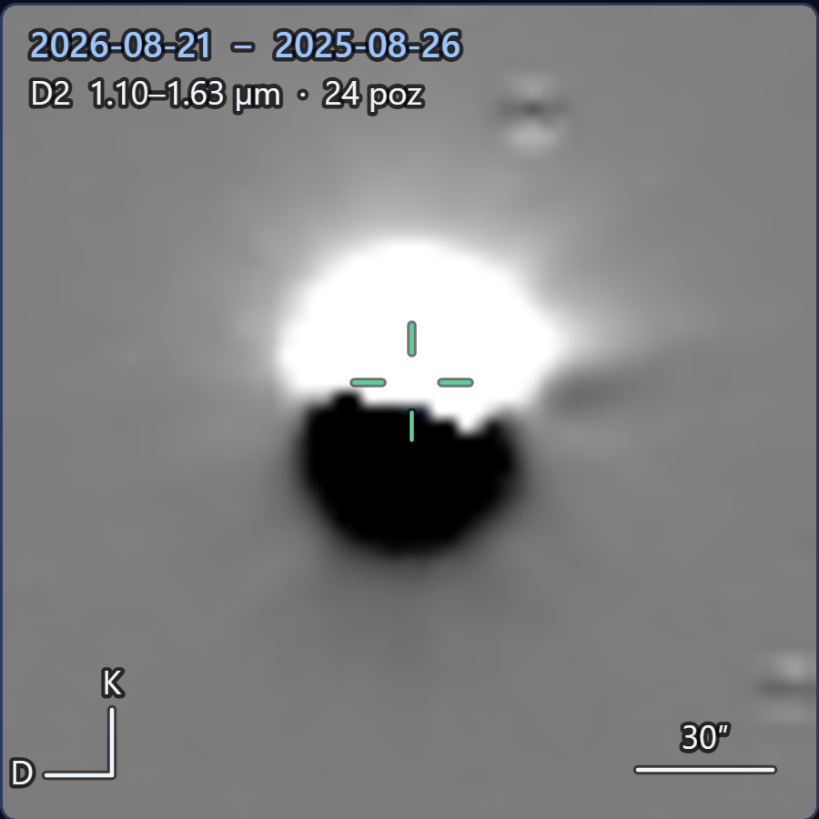
fark: son ziyaret − ilk ziyaret
10.4″yıllık hareket
≈ 1.7 pikselilk ve son ziyaret arasındaki kayma
358arşivdeki görüntü
WISE 0855−0714
bilinen en soğuk kahverengi cüce
Görevde verilen koordinat cismin 2010’daki konumudur; yılda 8.1″ hareket ettiği için bugün yaklaşık 2′ batıdadır ve araç alanı bugünkü yerine ortalar. Cüce yalnız D6 dedektöründe görünür. Fark görüntüsünde sabit yıldızlar silinir; cüce, hareket yönünde koyu–parlak bir çift bırakır.
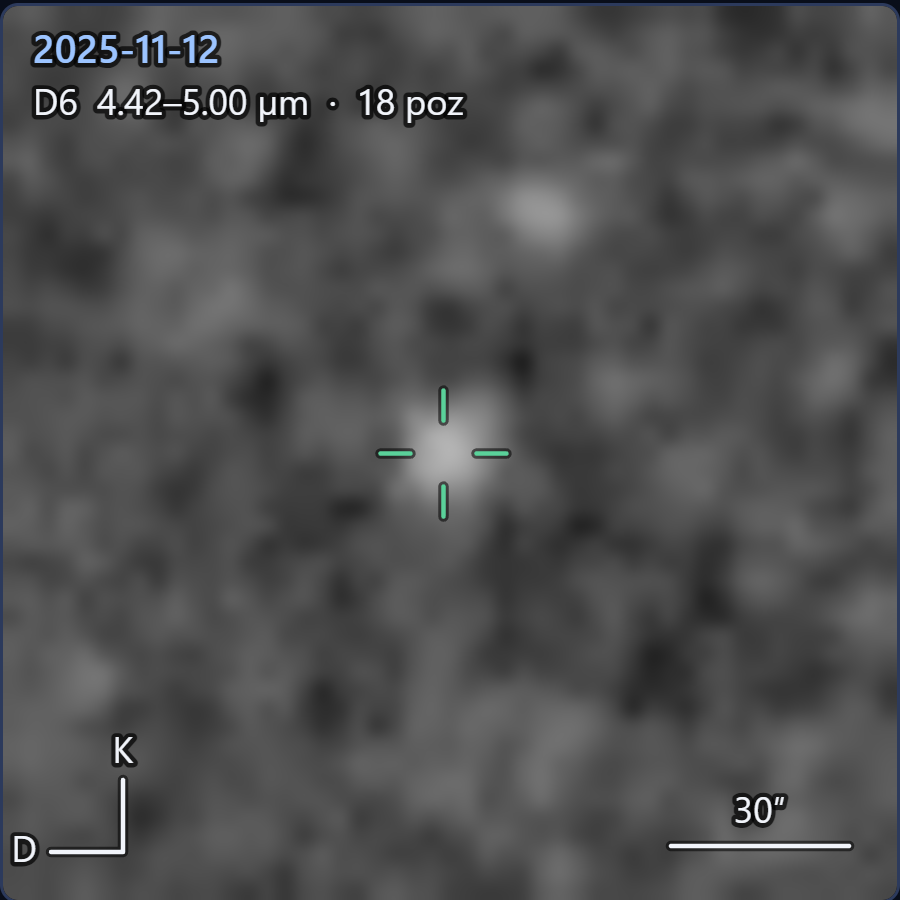
12 Kasım 2025 · D6
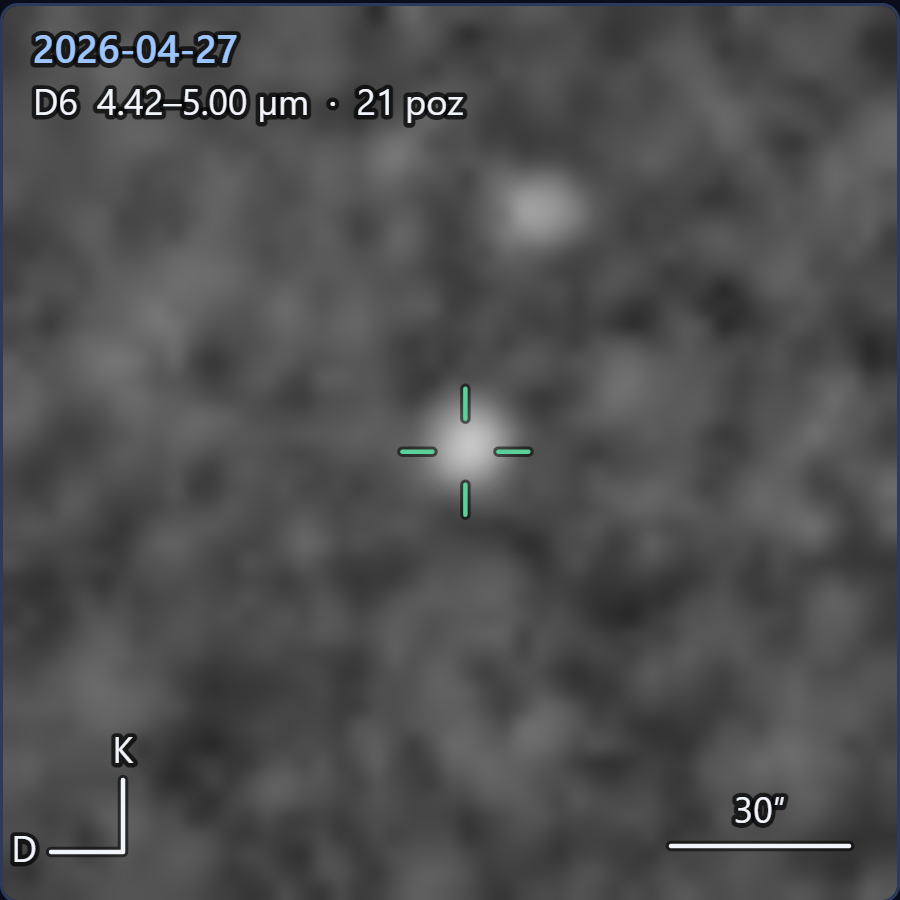
27 Nisan 2026 · D6
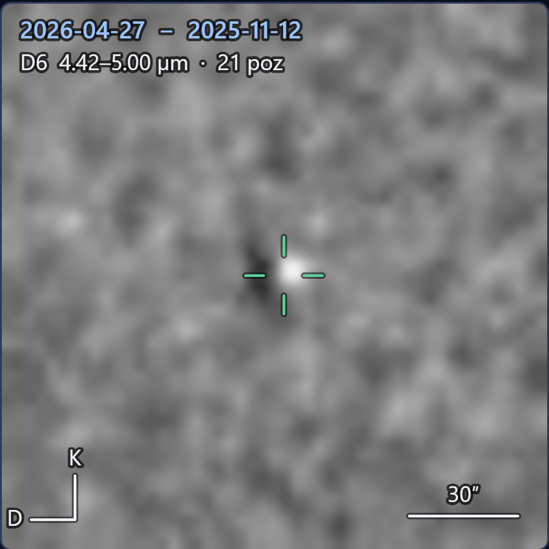
fark: Nisan 2026 − Kasım 2025
D6yalnız 4.42–5.00 µm’de görünür
8.1″yıllık hareket
≈ 2′2010’daki konumundan uzaklığı
Epsilon Indi B
bir çift kahverengi cüce
Araç cismi beş ziyaret boyunca izleyip 454 pozda ölçtü. Spektrumda 1.3, 1.6, 2.1 ve 4 µm civarında tepeler, aralarında derin çukurlar var: kahverengi cüce atmosferindeki su buharı ve metanın imzası. Hazır bir spektrum dosyası kullanılmadı; her nokta görüntülerden o anda ölçüldü.
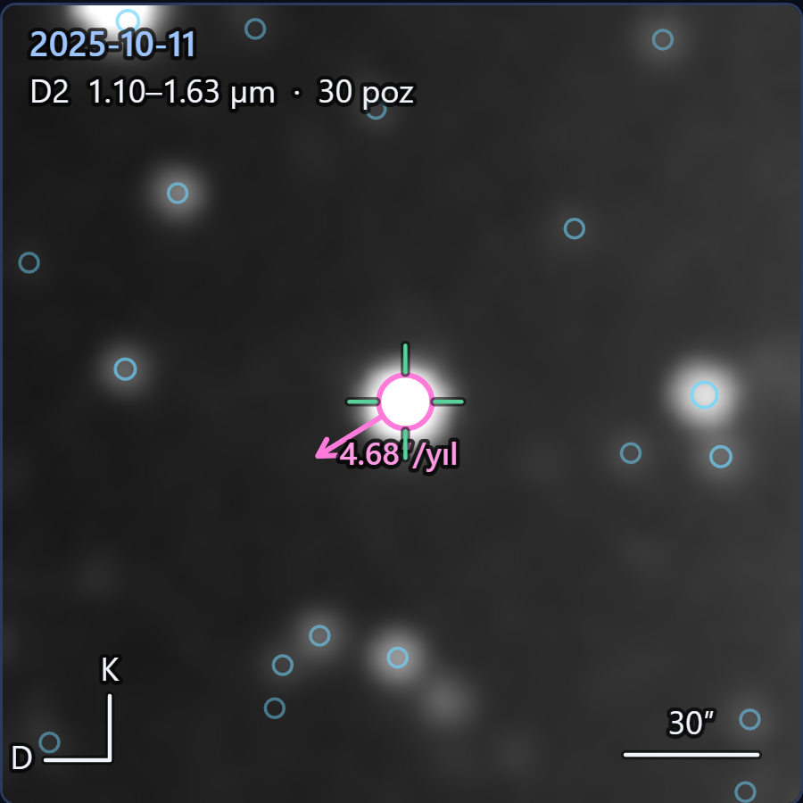
11 Ekim 2025 · ok: Gaia hareketi
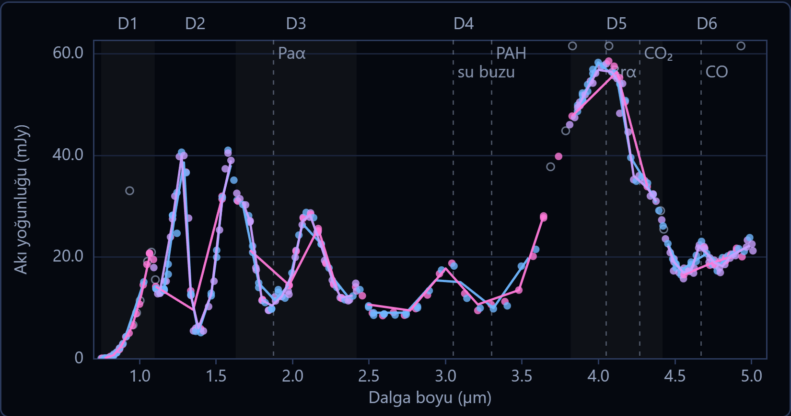
spektrum; renkler ziyaretlerdir (en iyi örneklenen üçü)
454pozdan ölçülen spektrum
4.7″yıllık hareket
≈ 58 mJyen parlak olduğu yer: 4 µm
github.com/CumaDogangithub/nasa_space_apps5 / 8
SPHEREx Blink TreeNASA Space Apps Challenge 2026
4Sonuçlar: parlaklığı değişenler
Her poz yıldızı farklı bir dalga boyunda gördüğü için araç, değişimi yalnız zamana göre değil renge göre de gösterir.
RW Aurigae
düzensiz değişen genç yıldız
Araç yıldızı üç ziyarette (Eylül 2025, Mart 2026, Eylül 2026) 332 pozda ölçtü. Bir yıl içinde 3.8–5 µm’deki parlaklığı yaklaşık yarıya indi (4.4–5 µm’de 2900 → 1500 mJy); 0.75–1.1 µm’de ise yaklaşık 1.5 katına çıktı. Tek renkte bakan bir araç bu değişimin yalnız bir yüzünü görürdü.
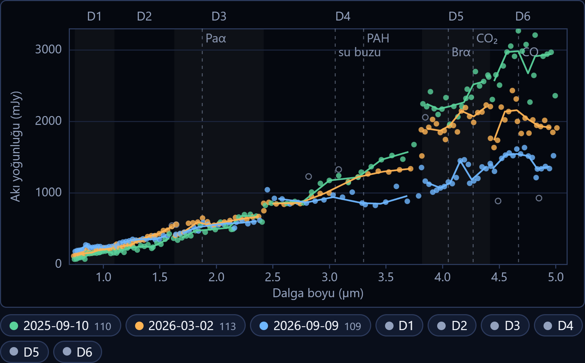
Spektrum, ziyarete göre renkli: uzun dalga boylarında üç ziyaret birbirinden ayrılıyor.
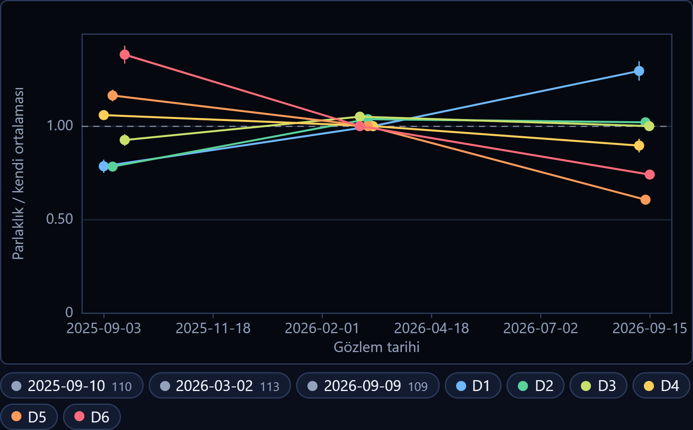
Işık eğrisi, dedektöre göre renkli: D5 ve D6 sönerken D1 parlıyor (1 = yıldızın kendi ortalaması).
R Draconis
245 günde bir nabız gibi atan kırmızı dev
Kuzeydeki derin alana yakın olduğu için SPHEREx onu neredeyse kesintisiz izliyor. Yıldız SPHEREx için fazla parlak: okunan 592 pozun 591’inde çekirdeği doymuş. Araç bunu fark eder ve çekirdek yerine çevresindeki halkadaki ışığı (merkezden 25–43″) ölçer. Bu ışık ziyaretten ziyarete iki kattan fazla değişiyor.
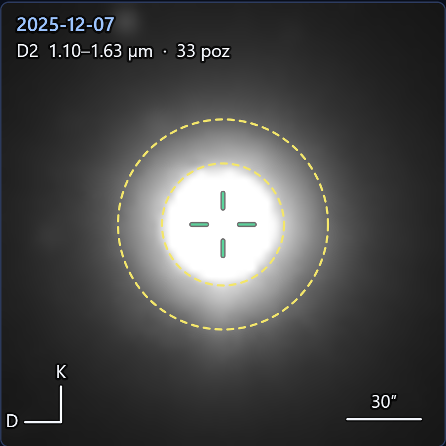
7 Aralık 2025 · daireler: halka
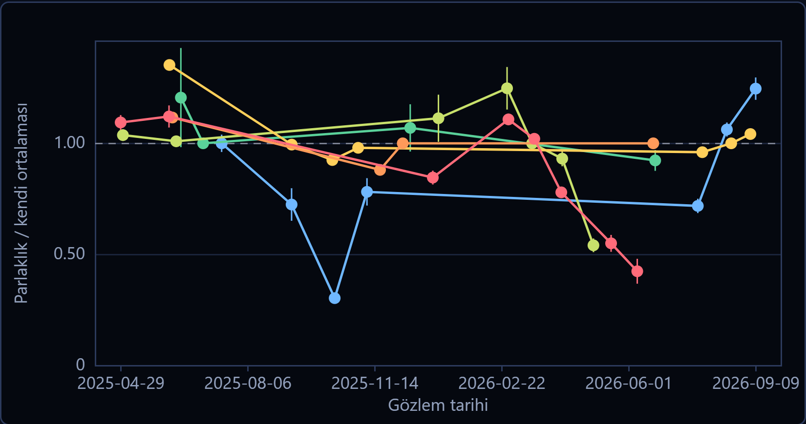
halkadaki ışığın zamanla değişimi; renkler dedektörlerdir
2493arşivdeki görüntü
591 / 592pozda çekirdek doymuş
25–43″ölçülen halka
Beş hedef bir bakışta
Hedef
Arşivdeki görüntü
Filmdeki ziyaret
Araç ne gösteriyor?
Barnard Yıldızı
358
3
bir yılda 10″ kuzeye kayma; Gaia’nın öngördüğü yerde
WISE 0855−0714
258
4
yalnız D6’da görünür; fark görüntüsünde hareket izi
Epsilon Indi B
458
5
hareket ve kahverengi cüce spektrumu
RW Aurigae
335
3
4–5 µm’de yarıya sönme, 1 µm’de parlama
R Draconis
2493
5
doymuş çekirdek; çevresindeki halkadan ışık eğrisi
Toplam 3902 görüntü. “Filmdeki ziyaret”, hedefin varsayılan dedektöründeki kare sayısıdır (WISE 0855 için D6, diğerleri için D2).
github.com/CumaDogangithub/nasa_space_apps6 / 8
SPHEREx Blink TreeNASA Space Apps Challenge 2026
5Görevin ötesi ve doğrulama
Görev metni isteğe bağlı sekiz özellik sayıyordu. Sekizi de araçta var.
Yeni veri sürümlerine kolay uyum
Ön hesaplama yok; yeni görüntüler kendiliğinden gelir. Yeni sürüm için releases.json’a tek satır.
102 bandın yaratıcı kullanımı
Altı dedektör ayrı ya da birlikte yığılır; haritada 102 kanal gezilir; tıklanan yıldızın spektrumu çıkar.
Zamanları toplama ve çıkarma
Fark görünümü seçilen ziyareti çıkarır; Toplam hepsinin ortalamasını alır.
Seçilebilir görüş alanı
1′ ile 30′ arasında; alan büyüdükçe piksel ölçeği kendiliğinden ayarlanır.
Gaia ve WISE katmanları
Gaia DR3 yıldızları karenin tarihine taşınarak çizilir; haritada WISE, 2MASS ve DSS katmanları var.
Adreste koordinat, gömülebilirlik
Görünümün tamamı adrestedir (konum, alan, dedektör, mod, dil); embed=1 ile başka sayfaya gömülür.
Kirlenme bayrakları ve üst veri
SPHEREx’in kalite bayrakları karede boyanır ve sade dille açıklanır; her poz saati ve dosyasıyla listelenir.
astropy ve Aladin Lite
Sunucu astropy ile okur ve hizalar; gökyüzü haritası Aladin Lite’tır.
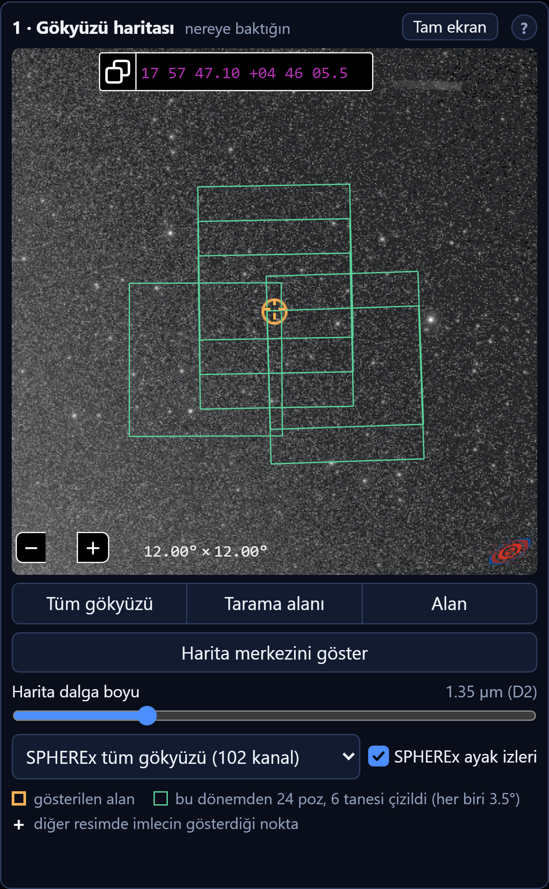
Gökyüzü haritası: turuncu işaret filmi izlenen alan, yeşil kareler o ziyaretin SPHEREx pozlarından birkaçı.
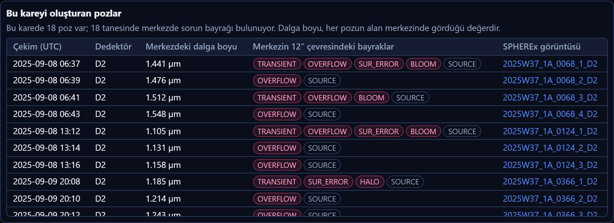
Bayraklar açıkken karedeki her poz listelenir: çekim saati, alan merkezinde gördüğü dalga boyu, SPHEREx’in bayrakları ve özgün dosyanın bağlantısı.
Listede olmayan eklerimiz
Türkçe ve İngilizce arayüz
Sunucusuz çalışan çevrimdışı demo
Cisim adıyla arama (SIMBAD)
Doymuş yıldızlar için halka ölçümü
Harita ile film arasında bağlı imleç
Arşivin araması yanıt vermediğinde de çalışır
Doğru mu?
0.4–0.8″Gaia DR3’e göre ortanca konum farkıÜç 6′ lik test alanında (D2), yıldızların karede olması gereken yer ile göründüğü yer karşılaştırıldı. Fark, 6.15″ lik bir SPHEREx pikselinin küçük bir kesridir.
0.94 · 1.01 · 0.97SPHEREx / 2MASS parlaklık oranı (J, H, Ks)RW Aurigae yakınındaki beş sıradan yıldız aynı yöntemle ölçülüp 2MASS kataloğuyla karşılaştırıldı.
5–30 snyeni bir alanın ilk görüntüsüSüre, alanın genişliğine ve okunan dedektör sayısına bağlıdır. Sonuçlar önbelleğe alınır; ikinci açılış anında gelir.
Dürüst sınırlar. Parlaklıklar hızlı bakış değeridir: ölçüm dairesine giren komşu yıldızlar sonuca eklenir, dairenin dışına taşan ışık için düzeltme yapılmaz. SPHEREx pikseli 6.15″ olduğundan birbirine çok yakın cisimler ayrılamaz. Çok parlak yıldızların çekirdeği doyar; onlarda yalnız halkadaki ışık izlenebilir.
github.com/CumaDogangithub/nasa_space_apps7 / 8
SPHEREx Blink TreeNASA Space Apps Challenge 2026
6Kimler için, nasıl kurulur, sırada ne var?
Araç bugün çalışıyor: kurulumu üç komut, denemesi bir dakika.
Kimler için?
Gönüllü gökbilimcilerYakın, soğuk ve hızlı cisimleri SPHEREx’in 102 renginde arayabilirler; WiseView’den alıştıkları yöntemle.
Öğrenciler ve öğretmenler“Yıldızlar hareket eder mi?” ve “spektrum nedir?” sorularını gerçek uzay verisiyle gösterebilirler.
AraştırmacılarBir kaynağın bütün SPHEREx ziyaretlerine, spektrumuna ve kalite bayraklarına birkaç saniyede bakabilirler.
Nasıl çalıştırılır?
Python 3.10 ya da üstü yeterlidir (macOS ve Linux’ta .venv/bin/python):
Sonra tarayıcıda http://localhost:8000 açılır. Kurulum yapmadan görmek için web/index.html dosyasını açmak yeter: beş test hedefi kayıtlı veriden gösterilir.
Bir dakikada dene
Üstteki WISE 0855−0714 düğmesine bas: film D6 dedektöründe başlar.
Fark görünümüne geç (D tuşu): sabit yıldızlar silinir, cüce kalır.
Epsilon Indi B’yi seç ve Hedefi ölç’e bas: spektrum çizilir.
RW Aurigae’de Işık eğrisi’ne geç: bir yıldaki sönmeyi gör.
Haritada Harita dalga boyu kaydırıcısını oynat: gökyüzü 102 renkte.
Tuşlar: boşluk oynat/duraklat · ← → kare · 1–6 dedektör · D fark · G Gaia · F bayraklar
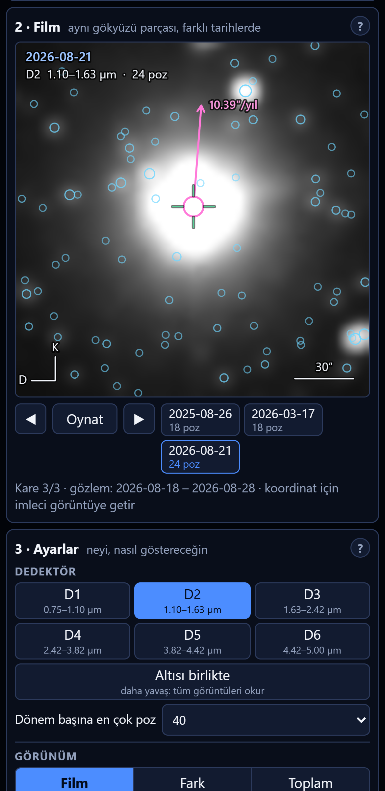
Telefon ve tablette de aynı araç: kutular alt alta dizilir.
Sırada ne var?
Kalite bayraklarını kullanarak spektrumları kendiliğinden temizlemek
Bilinen asteroitleri karelerde etiketlemek
Geniş alanları daha hızlı okumak
Aracı herkese açık bir sunucuda yayınlamak
Kullanılan teknolojiler
Python 3.10+FastAPIastropyNumPy · SciPyHTML + JavaScript (derleme adımı yok)Aladin Lite
Veri ve teşekkür
Bu proje, NASA’nın finanse ettiği, Jet Propulsion Laboratory ile California Institute of Technology’nin ortak projesi olan SPHEREx’in veri ürünlerini kullanır; veriler NASA/IPAC Kızılötesi Bilim Arşivi’nden (IRSA) alınmıştır. Konumlar ve öz hareketler ESA Gaia görevinden (DR3) ve SIMBAD veritabanından gelir. Gökyüzü haritası Aladin Lite’tır (CDS, Strazburg). Arayüz için WiseView ve IRSA’nın SPHEREx Data Explorer’ı örnek alınmıştır.
Yapay zekâ kullanımı. Kod ve bu rapor, bir yapay zekâ kodlama yardımcısının (Claude) desteğiyle geliştirildi. Ölçümler Gaia DR3 ve 2MASS kataloglarıyla karşılaştırılarak doğrulandı.
SPHEREx Blink TreeGökyüzünün kızılötesi filmi: bir koordinat, bir tıklama.
github.com/CumaDogangithub/nasa_space_appskaynak kod ve kurulum